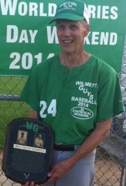

Bill was an accountant. Not just an accountant - a CPA! As a child, Mia got excited when it was tax season because she knew Bill would be happy to start his taxes ASAP. Bill wanted Mike’s name to be William the third, but Joan thought it was too snobby. Bill then pointed out that the baby wouldn’t need to use ‘the third’ until he was a CPA (keep in mind that the baby hadn’t been born yet).
Outside of taxes, Bill LOVED baseball. He was a part of the local baseball team called The Wilmette Guys. His childhood friend Bob Wilcox and Bill would play so often, that Joan would joke that it was like Bill was dating them both. He would literally schedule alternating days for dating Joan and playing baseball with Bob.
Bill was a lifelong Cubs fan and would frequently attend games with Valerie. She was definitely his favorite child, and the only one to follow his path as a CPA.